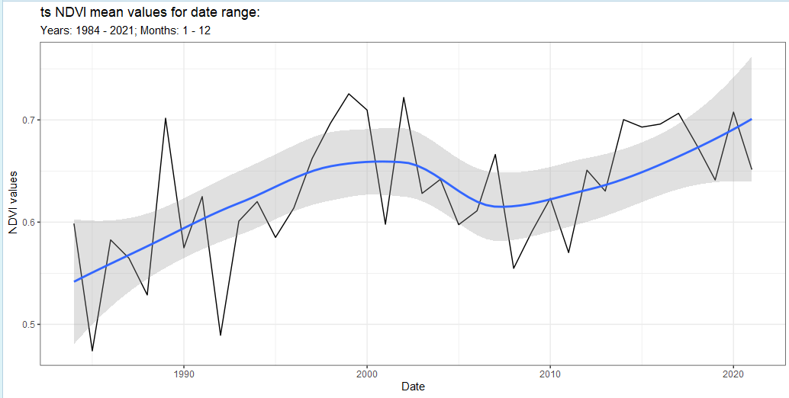
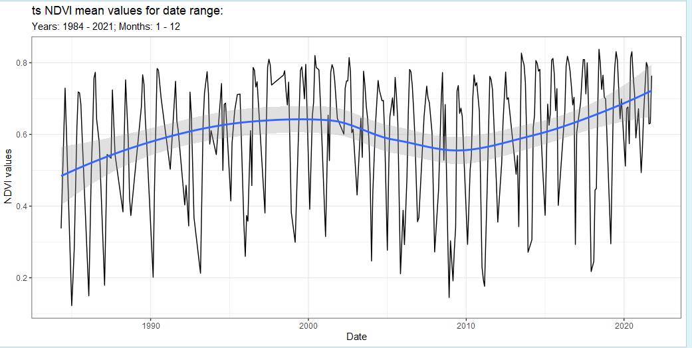
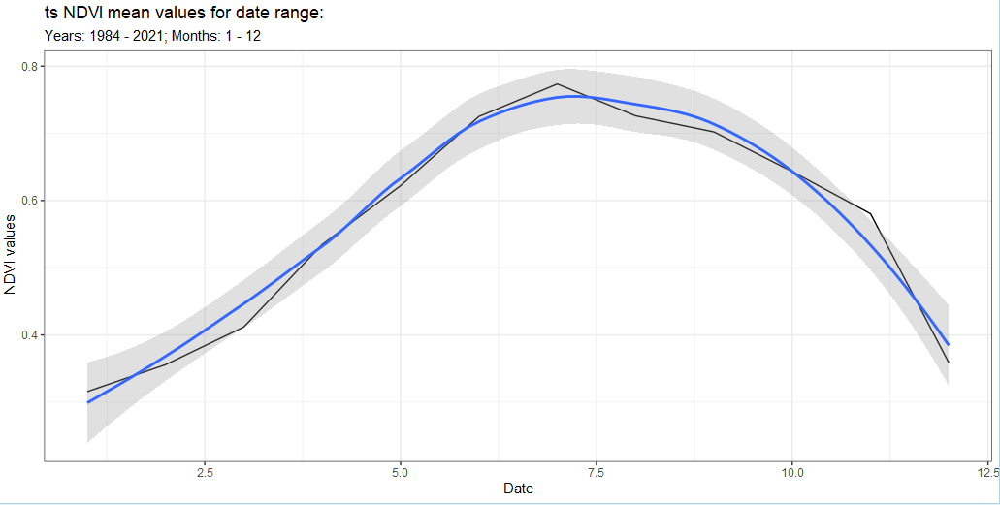
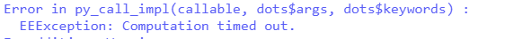
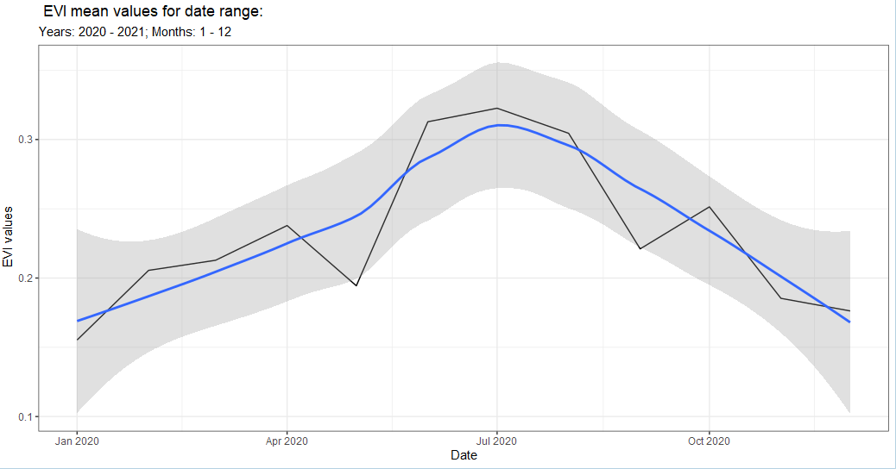
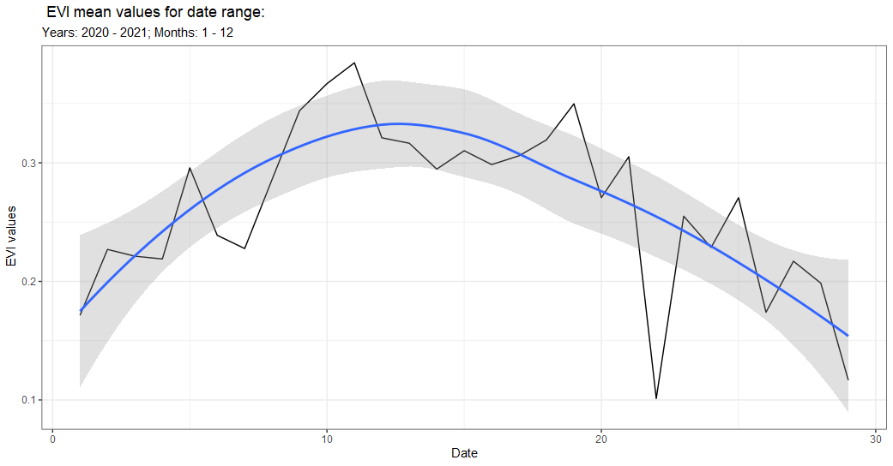
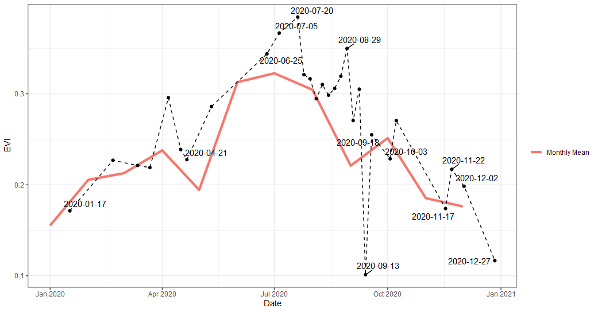

The band() function is a way to get time series from an imageCollection by using the Earth Engine function toBands() and {rgee} ee_extract(). In short, it allows the user to reduce by time (temporal). To use the band() we’ll need to provide a ImageCollection and from there we can get a time series. This is similar to rr() except we can now bring in the time component with the temporal argument. We’ll go over a few examples below. Of note, this can be an expensive function depending on the size of query so take that into account when using and try using lazy = TRUE if expensive.
First we’ll need to get an image that we’ll want to reduce on. We’ll use the get_landsat() function, which will let us get an imageCollection. We’ll need to define a geometry aka area of interest (aoi) so that we can clip the imageCollection. To do this we’ll use the {mapedit}.
library(mapedit)
aoi <- drawFeatures()From here we can start with the get_landsat() function and get an ImageCollection. What’s nice about using the get_*() functions is you will provide the time frame you are looking to analyze but if you don’t use the get*() no worries! Just enter them into the arguments of the band() function as you’ll see later. Another advantage of using the get_landsat() function is it will combine all the missions with method = 'ts' or harmonized method = 'harm_ts'.
library(exploreRGEE)
library(rgee)
ee_Initialize()
landsat <- get_landsat(aoi = aoi,
method = 'ts',
startDate = '1984-01-01',
endDate = '2021-12-31',
cloud_mask = TRUE,
c.low = 1,
c.high = 12)With band() we have a few options with our ImageCollection; 'yearly' (default), 'monthly', 'year_month', 'all'. yearly will filter the ImageCollection by year and then reduce by the stat argument. For example, if we wanted the yearly mean of some band we’d need to use temporal = 'yearly' and stat = 'mean' arguments in the band() call. Let’s do that with our landsat object.
Now we have a data frame with yearly mean NDVI! We can also add some additional arguments for a quick look like ggplot() = TRUE. This will provide a side-effect plot of the time series but will also save the data frame.
landsat_band_yearly <- landsat %>% band(scale = 30,
band = 'NDVI',
temporal = 'yearly',
stat = 'mean',
ggplot = TRUE) But we can do this for all the other time filtering as well.
landsat_band_year_month <- landsat %>% band(scale = 30,
band = 'NDVI',
temporal = 'year_month',
stat = 'mean',
ggplot = TRUE)
landsat_band_monthly <- landsat %>% band(scale = 30,
band = 'NDVI',
temporal = 'monthly',
stat = 'mean',
ggplot = TRUE)
Now as you can imagine this can get out of hand pretty fast with numerous spatial features and long time spans. Below we’ll go over using the argument lazy = TRUE.
When we call something big (time and space) we’ll most likely want to stash that away so we can do other processes in an R session but mostly we’ll get this error below as well.

We can stash it with lazy = TRUE, which will create a future task to be called later. That means after you run the function you’ll need to use {future} some_name <- future::value() to get your object back. This can take some time so be patient if it’s a big call. Another thing that is going on with this call is that if the underlying spatial feature has more than 10 rows (points/polys) then the function will do a for-loop to try and avoid the error above. Most of the time this works but sometimes it might not depending on the query.
Again, just like the viz() and rr() functions you can always use your own derived ImageCollection; however, you’ll need to specify your own years and months with the startDate, endDate, c.low, c.high arguments as well as provide a user geom (sf). Below we’ll get an ImageCollection using {eemont} package.
library(reticulate)
eemont <- import('eemont')
pt <- exploreRGEE:::sf_setup(aoi)
sent_sr <- ee$ImageCollection('COPERNICUS/S2_SR')$
filterBounds(pt$geom)$
filterDate('2020-01-01','2021-01-01')$
maskClouds()$
scaleAndOffset()$
spectralIndices(c('EVI','NDVI'))
band_sent_sr <- band(sent_sr,
temporal = 'year_month',
scale = 10,
band = 'EVI',
stat = 'mean',
ggplot = TRUE,
user_geom = pt$aoi,
startDate = '2020-01-01',
endDate = '2021-01-01',
c.low = 1,
c.high = 12)
Or we can look at ‘all’ the values by changing temporal = 'all'.
band_sent_sr_all <- band(sent_sr,
temporal = 'all', #change to all
scale = 10,
band = 'EVI',
stat = 'mean',
ggplot = TRUE,
user_geom = pt$aoi,
startDate = '2020-01-01',
endDate = '2021-01-01',
c.low = 1,
c.high = 12)
Or combine both our queries with ggplot().
